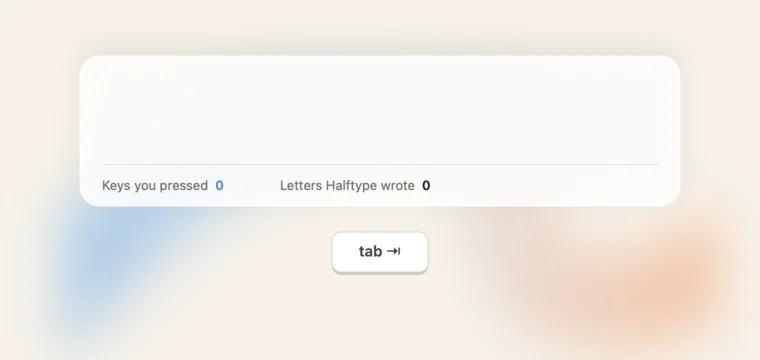
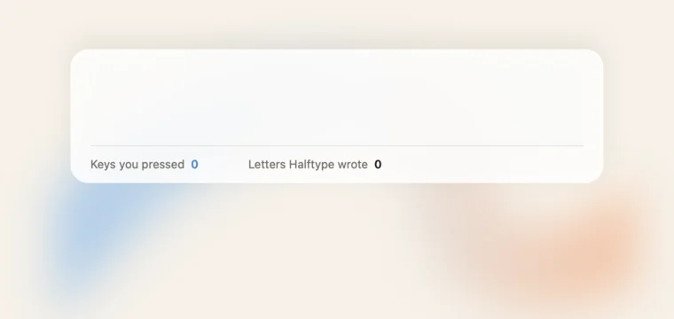

README demo: timing
How fast the demo types, waits and Tabs, and how the glint plays. John on the shipped one (A): "Yikes that looks messy. Give me some variants of different timings and stuff".
scripts/demo.sh (same model, sentences and counts), so what you see is what the README would show.
Eight Tabs a second, each word glinting, and a new suggestion after every letter. 9 s. shipped
A's idea at five Tabs a second, glint per word, suggestions steady while typing. 12 s. tab=20 glint=word
A clear pause to read each suggestion, Tabs through it, one glint over the run, a rest after. Easiest to follow; the slowest besides F. 16 s. beat=35 tab=18 after=15 glint=burst

A short beat, quick Tabs, then one glint across all the words that run took. Calm without being slow. 12 s. beat=12 tab=14 after=8 glint=burst
Just the key going down and the grey turning black. The quietest; loses the app's glass touch. 12 s. beat=12 tab=18 glint=none
Slower typing, long beats, a glint per word. Every step is legible, but at 20 s many readers won't wait for the second sentence. type=7 tab=28 beat=40 after=25

D's timing with no key drawn: the text and counts alone. Cleaner, but nothing says the key is Tab. 12 s. key=0